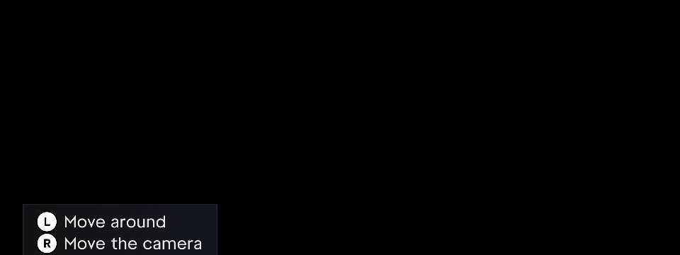
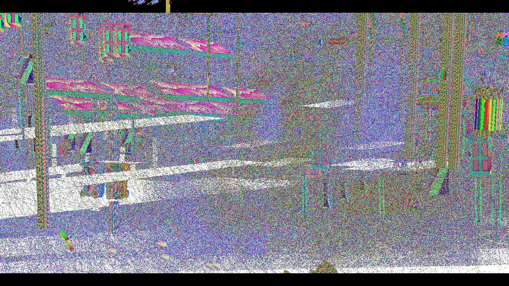
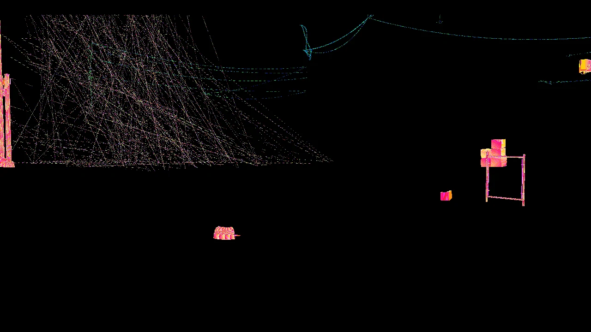

截图记录
这些画面验证了什么
有时最终画面还没有成形，渲染过程中的诊断图已经能看见几何体。下面的对照图逐一标明每张截图来自哪个阶段。
到达营地，用了四次跳过检查点
第一次跳过检查点，快艇追逐进入了下一阶段。第二次进入望远镜教程，第三次进入“留在船上”，第四次才到营地。在固定缩放的地图上，六处地标随前进和后退反向移动，松杆后保持稳定。两张图都来自游戏窗口。画面仍有黑色矩形，渲染也很慢；持续驾驶快艇和找到唐尼都还没有得到验证。


G6 · 本地候选版本
两段过场之后，快艇依然开不动
这次实机运行遇到了八个新的着色器程序，全部用游戏原有的着色阶段成功创建了原生管线。其中三个负责水体体积效果，一个负责光学效果，另有四个像素着色器。这些记录能确认管线创建成功，单个像素具体由哪个着色器生成还无法判断。
我在“跟上飞机”提示刚出现时和约四秒后各取了一帧，测量地平线以下同一块 643 × 185 像素的区域。G4 两帧的品红色占比分别为 29.15% 和 10.55%，G6 两帧均为 0%。两次运行的镜头和时序略有差别，G6 的水面仍有明显黑块。
我选了“重试检查点”便松开所有按键。从任务提示隐约出现，到红色的“引擎已损毁”警告亮起，按画面采样计时，G4 用了 7.430 秒，G6 用了 6.835 秒。两次任务都以“Cal 掉下了船”告终。G6 重试时，小地图上抽查的 18 行像素中，岛岸边缘始终停在原位。


23:31 UTC · 本次核对时间
从快艇到望远镜
在阳光场景的版本中，我见到了有名字的狱警，进入了办公室过场，随后到了有柜员的手柄教程。到了水上，松开手柄和按住油门重试，原有检查点都提示“Cal fell off the boat”（卡尔掉下了船）。我使用游戏自带的跳过检查点功能，才到了“追上飞机”的任务。
打方向时，两台舷外机都跟着转。加油门后船尾出现尾流，但岸线的相对位移不到 0.3 像素，界面距离一直是 0.45 英里。游戏提示“The boat couldn't be driven”（快艇无法驾驶）。第二次使用游戏自带的跳过功能后，岸边教程打开了装备轮盘。把摇杆推向右下角选中望远镜，任务随即更新为“Scope out the deal”（观察交易现场）。目前仍未验证快艇能靠自身动力航行。
使用同一上游运行时的另一位测试者也遇到了乘客落水、任务无法继续的问题。这个报告记录的是对方构建中的故障。 另一位测试者的快艇故障记录 · #279

23:31 UTC · 本次核对时间
片头的六秒动画里，有多少张画面真的变了？
在同一台机器上，保持常规截图开启，比较 Rockstar 标志运动的同一段六秒动画。原版本向窗口送出了 164 张图，其中只有 24 张不同。修正后送出 171 张，有 168 张不同。渲染端耗时的第 99 百分位从 151.88 毫秒降至 54.03 毫秒，客户端偶尔仍会出现 116.79 毫秒的间隔。直到第 900 帧，计划中的 25 张截图全部保留。
纹理检查现在能识别通过第二个映射写入的数据，PNG 编码也移出了呈现线程。我的自适应纹理检查与上游 PR #115 有重合。PNG 后台编码和正常退出时处理完剩余截图的改动，我已通过 PR #142 提交。记录时该提案仍在审核中。这组数据只衡量片头视频。
23:31 UTC · 本次核对时间
监狱院子的实测帧率从 2.951 升到 3.335
院落测试使用同一块 GPU 和相同的 Series X 视角，每个构建连续测量 650 个原生呈现间隔。第 95 百分位的间隔从 377.83 毫秒降至 330.77 毫秒。另一路 Series S 测试越过了此前第 1485 帧的设备移除错误，在第 1680 帧以原生 1080p 输出抵达同一院落。该路径的稳定帧率还没有测出。
另一次测试按关闭、开启、再关闭的顺序切换间接绘制实验，分别测得 3.03、2.93 和 3.26 帧/秒。此项实验目前保持关闭。院落中抽查的两帧里，队列总等待约为 190–200 毫秒，耗时最长的单条阴影掩码命令约占 11 毫秒。仅这一条命令解释不了大部分等待时间。
23:31 UTC · 本次核对时间
光线追踪场景里实际收到了什么
23:16 UTC 的监狱测试中，顶层加速结构里实际收到了 1,763 个实例。抽查的前四个实例变换值均为有限数，并引用了三个不同的原始底层加速结构。游戏现场的三角形数据仍待核实。预热后的院落测试已测到全部六个光照缓冲区。上游贡献者 cxccxc 在渲染器提交 90228a7 中修复了同样的两个光照着色器。这一场景的画面是否因此改善，尚未验证。
原有的浅水时间步长程序在硬件和 WARP 上分别测出了预期的 0.25 与 0.125，空输入和空指针用例也得到正确结果。这些数值测试能否带来实际的船体移动，还要在任务中重跑验证。
合入上游 #40、#235 和 #280 的改动后，选测的八个原始快艇及场景材质程序全部完成翻译，通过 DXIL 验证并建成原生测试管线。上一版八个均未通过。其中七项像素着色器测试搭配的是占位顶点着色器，实际游戏中的材质画面仍待核实。 上游光照修复 · cxccxc
公开分支与收录申请
我用描述性名称发布了阳光场景分支和较早的牢房分支。我另外向 PortWatch 提交了收录申请，目前仍在等待编辑决定，尚未获得收录位置或排名。
阳光场景分支 · 测试分支版本 89884ba5 · 早期牢房分支 · 早期版本 d25f89da · PortWatch 收录申请 #69
· 实测记录时间
普通游戏窗口里看到了阳光下的院子
我在上游 fxceless/victory-gta6 的 1684989 基线上加入保护措施后进行了测试。原生第 2400 帧里能看清阳光下的人物、围栏和瞭望塔。两根摇杆均有响应。玩家走到原有的狱警任务点后，画面上下出现黑边，游戏进入一段剧情，之后出现了一条新的走廊。
单独运行时，300 个原生帧间隔共耗时 119.636 秒，约合 2.51 帧/秒。这是我对上游渲染结果的独立复现。我先前的 cell-tutorial 分支记录的是画面几乎全黑的牢房测试。下方保留了那个版本的深度图、光照图和游戏界面截图。 上游基线提交 1684989
· 2026 年 11 月 24 日
Windows 上的牢房操作实测
窗口里看到了什么。 第 3580 帧，任务提示是“Approach a cellmate to interact with them”（接近狱友，与其互动）。第 3974 帧，提示已变成“Go with the prison guard”（跟随狱警）。最终图像与显示缓冲区一致。场景几乎全黑，HUD 文字依然清晰。任务在两次手柄指令之间发生变化。这个版本中，切换条件、与狱警的互动及任务完成情况都还未获确认。 查看游戏界面实帧 →
行走与转动视角。 游戏读取了四条方向相反的右摇杆指令，两轮测试后同一根柱子都回到了原位。我又用左摇杆做了两轮前进和后退，近处的包相对远处的门向前移动，之后再回到原处。第一次前进时，包和门分别移动了 18 和 1 像素。第二次分别是 10 和 0 像素。测量采用游戏原始场景深度。 查看操作测量 →
灰度房间图来自哪里。 这张灰度图是游戏间接光照通道的中间结果。该版本中，尚未录得玩家在正常彩色场景中移动的视频，也还没有测得玩家控制下的平均帧率。 查看光照截图 →
测试版本。 这次测试使用 VIctory 社区测试分支的本地修改版，在 Windows 和 NVIDIA 显卡上运行。该分支记载的上游基线是 d2a4bae。 VIctory 项目 · 上游基线
任务提示在两次输入之间发生变化
较早一帧要求玩家接近狱友。前一条左摇杆指令已经松开，下一次手柄测试开始前，跟随狱警的提示就已出现。正常彩色画面仍然几乎全黑。后来查看地图时，也没有找到可见的人物标记。


灰度房间图是怎样生成的
游戏在计算间接漫反射光照时，由 FinalGather 计算着色器写出这张单通道 R8_UINT 图像，随后屏幕探针的解析阶段读取这张图。它是渲染器内部的中间产物。下方另有一张深度图，用于测量摇杆操作带来的变化。

行走、视角与牢房教程
右摇杆两次向右再向左后，同一根柱子都回到了原来的水平位置。另一次前进和后退测试中，近处的包移动了 18 像素，远处的门只移动了 1 像素。后退后，包与起点相差不到或等于 1 像素。第二轮行走又重现了这一往返。测量网格为 800 × 450。游戏原始显示是暗色背景上的任务文字。这一版本中尚未看到与狱友互动或行走时的骨骼动画。

游戏中的操作说明
教程把左摇杆标为“Move around”（移动），右摇杆标为“Move the camera”（移动视角）。这张局部截图取自第 3317 帧的游戏原始 HUD 图层。

· 第 2226 帧
几何体已进入裁剪阶段，光源列表仍为空
五次行人绘制共调用网格着色器 28,032 次，输出 28,032 个图元。其中 9,411 个经过裁剪后输出。这五次绘制在 GPU 上的像素着色器调用数和通过测试的样本数均为零。
同一帧中，另一次光照绘制调用了 802,816 次像素着色器，通过测试的样本同为 802,816 个。此前的材质通道标记了 5,120 个分块。全部 57,600 个范围分块的光源列表都为空，光照掩码的十二层也全是零。
人物的颜色如何出现在窗口里
过场动画中，游戏显示了基础色图像。捕获的显示缓冲区与完整源图像逐像素一致，呈现调用也成功返回。同一瞬间，正常合成画面只有上下黑边之间的一片浅灰。当时已经核实的操作仅有暂停和继续。


第 2085 帧
基础色通道共有 13 种不同的 RGB 颜色。在 156,592 个有覆盖的样本中，有 156,321 个具有非黑颜色。相邻一帧里，人物姿势稍有变化。正常合成画面是一片浅灰。另一张光照目标中，第一次分块绘制刚结束时，11,059,200 个红、绿、蓝通道值全为零。测试窗口当时显示材质掩码预览。这一轮尚未验证纹理细节或玩家控制下的人物移动。


序章中两名坐着的人物
窗口中的材质掩码按材质区分表面。可以看见两个人物、周围环境和桌子边缘。同一帧的正常合成画面几乎全黑。


游戏窗口显示出了三维场景
呈现回执与选定的诊断图像吻合，之后一帧的内容又发生了变化。由此可以确认，游戏通过这条诊断路径显示出了变化中的几何体。

渲染器内部的街景
两个中间目标都显示出了相互对应的建筑边缘、路面和立柱。当时的原生输出仍是暗色背景上的片头字幕。


彩色图与深度图中的轮廓相符
电缆和路牌在深度图中的位置与彩色图相同。这是这组本地测试里第一次辨认出场景表面。



技术资料